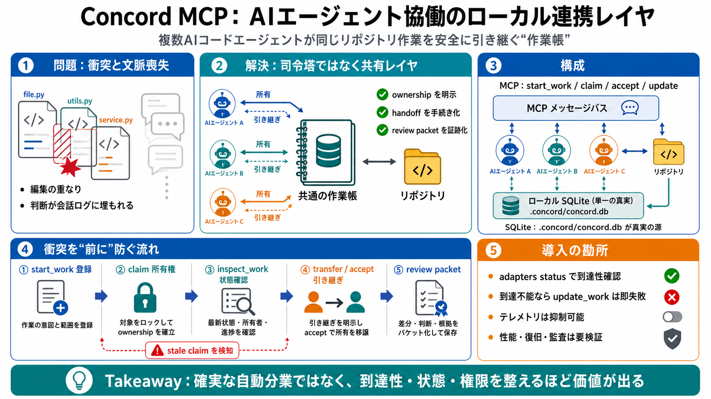

Privacy & Compliance Simplified | Concord
Runs on AWS Bedrock with Anthropic, Meta, and Amazon models, with a privacy-by-design architecture. Draft Answer Rout…

Local-first collaboration
複数のAIコードエージェントが「同じリポジトリ作業」を安全に引き継ぎできる、ローカルファーストの連携レイヤ（MCP経由）です。
ただのチャットではなく、ownership・handoff・レビュー状態・衝突（overlap）まで“タスクの記憶”として保持します。
Collision & context loss
別々のハーネス（実行環境）で動くエージェント同士は、同じ箇所を編集して衝突しやすく、さらに意思決定の文脈がセッション終了で消えがちです。
Not an orchestrator
Concordは司令塔（オーケストレータ）ではなく、代理人たちが同じ作業帳を参照しながら、順番と責任を明示して引き継ぐための土台です。
MCP message bus + Local state
MCP（Model Context Protocol）でメッセージングしつつ、状態はローカルSQLite（.concord/concord.db）を真実の源に統一します。
Overlap prevention
編集のあとで“かぶった”と気づくのではなく、start_work と claim/accept の流れで作業の重複を事前に検知・制御します。
Ownership & handoff protocol
タスクの責任移譲は、transfer/accept の手続きとして明示されます（単なるメッセージ送信ではない）。
Task memory, not chat history
Concordは、意思決定・前提・発見をタスクに紐づけて保持し、セッション終了後も文脈を追えるようにします。
Local control, visible operations
CLIやTUI（dashboard）で、衝突・古いclaim（放置）・レビュー準備完了などを可視化し、実務の管理コストを下げます。
Best-effort delivery
update_work は、指定したto_agent_idが到達可能でない場合に即失敗し、黙って別ルートへ回さない制約があります。
Privacy posture
テレメトリは送信されますが、コード断片・原ファイルパス・リポジトリ詳細・メッセージ内容を送らない方針が明記されています。
Strengths vs unknowns
強みは安全な所有権移譲と衝突制御、運用の見える化。一方で性能・耐障害性・脅威モデルなどの定量情報は不足しています。
Takeaway
Concord MCPは“確実な自動分業”ではなく、到達性・セッション状態・権限/プライバシーを整えたときに価値が最大化します。
先に adapters status で到達性を確認し、.concord/concord.db を前提とした運用（衝突・stale claim・レビュー状態）を設計するのが近道です。
Runs on AWS Bedrock with Anthropic, Meta, and Amazon models, with a privacy-by-design architecture. Draft Answer Rout…
MCP provides a standardized way to connect AI applications to external systems. [...] Developers: MCP reduces developmen…
Discover how MCP connects AI assistants to your contract data safely, with governed access, audit trails, and zero data …
When you use MCP tools, your application's security posture depends on the agent's interaction model. To learn how your …
Early adopters like Block and Apollo have integrated MCP into their systems, while development tools companies including…